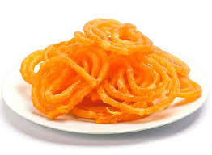

Jalebi
Ingredients:
- 1 cup all-purpose flour (maida)
- 1 cup water
- 1/2 teaspoon cardamom powder
- A pinch of saffron strands (soaked in 2 tablespoons of warm milk)
- Ghee or oil for deep frying
- For the sugar syrup:
- 1 cup sugar
- 1/2 cup water
- A few drops of lemon juice
Instructions:
1. In a mixing bowl, combine the all-purpose flour and water to make a smooth batter.
2. Add cardamom powder and the saffron-infused milk to the batter and mix well.
3. Heat ghee or oil in a deep frying pan.
4. Pour the batter into a squeezable container or a cloth with a small hole at the bottom.
5. Squeeze the batter into the hot ghee or oil in a coiled, spiral shape.
6. Deep fry the jalebis until they are golden and crisp.
7. In a separate pan, prepare the sugar syrup by boiling sugar, water, and a few drops of lemon juice until it reaches a one-thread consistency.
8. Dip the fried jalebis into the hot sugar syrup, ensuring they are coated well.
9. Remove and allow excess syrup to drip off.
10. Serve your Jalebis warm for the best taste and texture.
Indulge in the sweet and crispy goodness of homemade Jalebi!